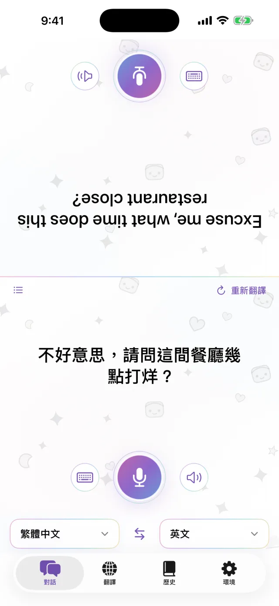
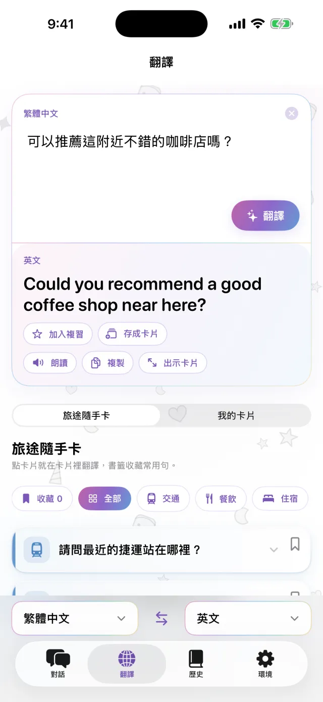
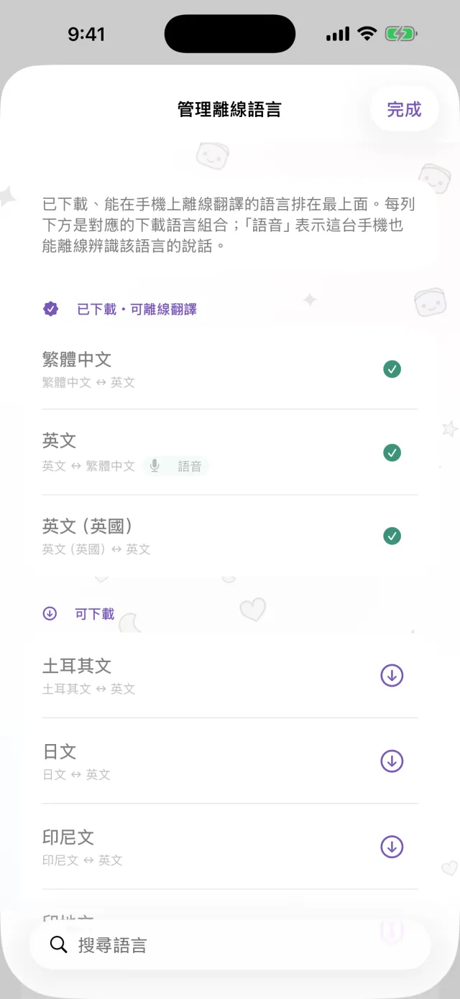
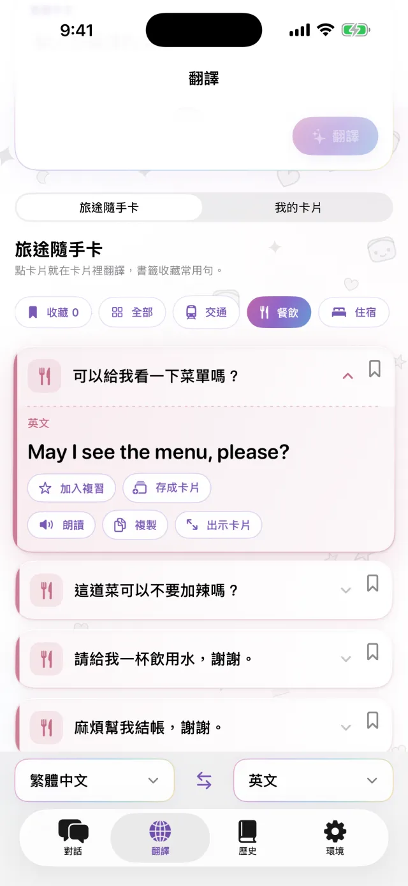
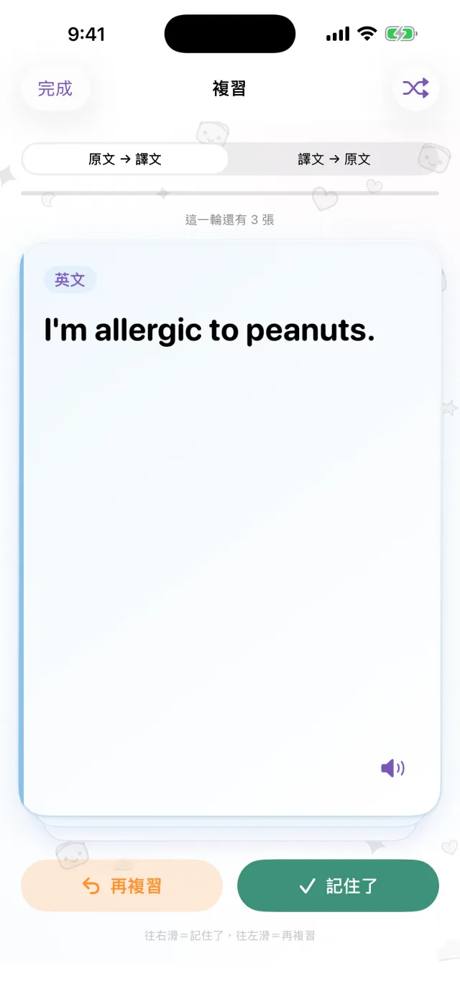

iPhone 翻譯 App
iPhone 翻譯 App
手機放中間，
面對面翻譯。
點麥克風說中文，對面那一側就出現英文。對方回話也一樣。語言先下載好，沒網路也能用。
即將在 App Store 推出- 約 20 種語言
- 下載後可離線
- 不用註冊

打字
不方便出聲時，打字就好
在安靜的地方，或對方說得太快的時候，可以直接打字。翻好的句子能放大成整個畫面，拿給對方看。
- 可以複製，也可以唸出來
- 兩邊語言一鍵對調

離線
沒有網路也能翻
翻譯、語音辨識、朗讀都在 iPhone 上進行。出國前先把要用的語言下載好，在飛機上、還沒買網卡時都能用。說過的話不會傳到伺服器，錄音也不會留下來。

常用句卡片
每次都要講的話，存成卡片
飯店地址、對什麼過敏、要找的車站。存成卡片，就不用每次重打。點一下卡片，就翻成對方的語言。交通、用餐、住宿、購物的旅途小卡也內建好了。

Pro
翻過的句子，回頭複習
翻譯紀錄會依日期留下來，想記住的句子可以做成字卡練習。這部分是 Pro 功能。

這些時候用得到
- 在小餐館點餐
- 跟計程車司機說地址
- 在藥局說明過敏
- 請飯店櫃檯寄放行李
- 問路
30 秒看懂
影片裡是開著飛航模式的。
基本資料
| 語言 | 約 20 種（Apple 支援裝置端翻譯的語言） |
|---|---|
| 離線 | 可以，語言下載後 |
| 語音輸入 | 可以，部分語言只能打字 |
| 帳號 | 不需要 |
| 價格 | 免費。Pro 另外付費（見下方） |
| 支援 | iPhone，iOS 18 以上 |
- 第一次使用要連網下載語言。
- 價格在 App Store 會以當地貨幣顯示。
免費版與 Pro
免費
- 面對面對話
- 打字翻譯、放大出示
- 離線翻譯
- 旅途小卡＋自訂卡片 3 張
- 有小橫幅廣告
Pro
- 沒有廣告
- 卡片不限數量
- 翻譯紀錄與字卡複習
可選每週、每月，或一次買斷。